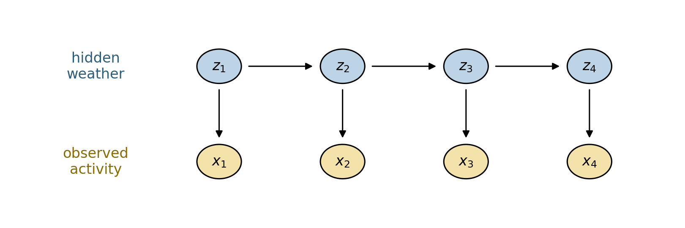
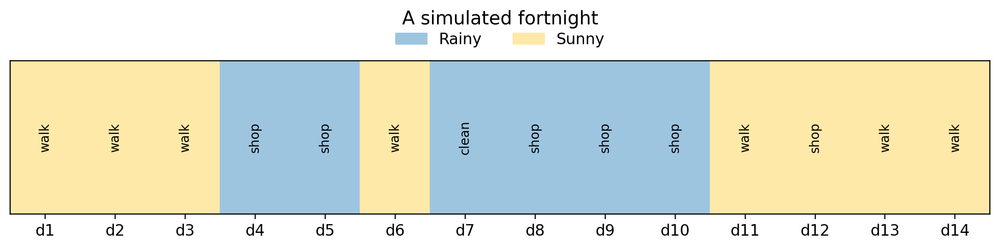

Years ago I wanted to play with Hidden Markov Models (HMMs) and their relatives for energy disaggregation, but the tooling was painful. Today we can write the generative story of a model in a few lines of Pyro – a probabilistic programming language built on PyTorch – and get exact inference for free. Even better, changing the graphical model is just editing the story, which is exactly what we will need when we move from a plain HMM to a factorial HMM later in this series.
This first post is deliberately tiny. We use the textbook rain/sun example and do everything twice: once with hand-written PyTorch so the math is transparent, and once in Pyro so you can see the pattern we will reuse and vary.
The story: the weather each day is hidden from us (Rainy or Sunny). All we observe is what a friend chooses to do – walk, shop, or clean. Weather tends to persist from day to day, and it nudges the activity. From the activities alone, can we recover the weather?
The model
An HMM has a chain of hidden states \(z_1, z_2, \dots, z_T\) with one observation \(x_t\) per state. It is defined by three pieces:
an initial distribution \(\pi_i = P(z_1 = i)\),
a transition matrix \(A_{ij} = P(z_{t+1}=j \mid z_t=i)\),
an emission matrix \(B_{ik} = P(x_t = k \mid z_t = i)\).
Two assumptions hide in that product: each state depends only on the previous one (the Markov property), and each observation depends only on the current state.
Code
import torchimport pyroimport pyro.distributions as distfrom pyro.ops.indexing import Vindexfrom pyro.infer import config_enumerate, TraceEnum_ELBO, infer_discretefrom pyro import poutineimport numpy as npimport pandas as pdimport matplotlib.pyplot as plt%matplotlib inline%config InlineBackend.figure_format ='retina'pyro.set_rng_seed(0)plt.rcParams.update({"figure.dpi": 110, "font.size": 11})
/Users/nipun/git/hmm/.venv/lib/python3.13/site-packages/tqdm/auto.py:21: TqdmWarning: IProgress not found. Please update jupyter and ipywidgets. See https://ipywidgets.readthedocs.io/en/stable/user_install.html
from .autonotebook import tqdm as notebook_tqdm
Code
states = ["Rainy", "Sunny"] # hidden weatherobs_names = ["walk", "shop", "clean"] # what we see our friend dopi = torch.tensor([0.6, 0.4]) # P(weather on day 1)A = torch.tensor([[0.7, 0.3], # P(tomorrow | Rainy today) [0.4, 0.6]]) # P(tomorrow | Sunny today)B = torch.tensor([[0.1, 0.4, 0.5], # P(activity | Rainy) [0.6, 0.3, 0.1]]) # P(activity | Sunny)print("Transition A (rows = today, cols = tomorrow):")display(pd.DataFrame(A.numpy(), index=states, columns=states))print("\nEmission B (rows = weather, cols = activity):")display(pd.DataFrame(B.numpy(), index=states, columns=obs_names))
Transition A (rows = today, cols = tomorrow):
Rainy
Sunny
Rainy
0.7
0.3
Sunny
0.4
0.6
Emission B (rows = weather, cols = activity):
walk
shop
clean
Rainy
0.1
0.4
0.5
Sunny
0.6
0.3
0.1
Here is the same model as a picture. Shaded top nodes are the hidden weather, bottom nodes are the activities we actually observe; arrows show what depends on what.
Code
from matplotlib.patches import Circledef draw_hmm(n=4): fig, ax = plt.subplots(figsize=(7.5, 2.6))for t inrange(n): ax.add_patch(Circle((t, 1), 0.18, fc="#bcd4e6", ec="k", zorder=3)) # hidden z ax.add_patch(Circle((t, 0), 0.18, fc="#f3e2a9", ec="k", zorder=3)) # observed x ax.text(t, 1, f"$z_{{{t+1}}}$", ha="center", va="center", zorder=4) ax.text(t, 0, f"$x_{{{t+1}}}$", ha="center", va="center", zorder=4) ax.annotate("", xy=(t, 0.22), xytext=(t, 0.78), arrowprops=dict(arrowstyle="-|>", color="k")) # z -> xif t < n -1: ax.annotate("", xy=(t +0.78, 1), xytext=(t +0.22, 1), arrowprops=dict(arrowstyle="-|>", color="k")) # z -> z ax.text(-1.0, 1, "hidden\nweather", ha="center", va="center", color="#2c5d7c") ax.text(-1.0, 0, "observed\nactivity", ha="center", va="center", color="#8a6d00") ax.set_xlim(-1.7, n -0.3); ax.set_ylim(-0.6, 1.6); ax.axis("off") plt.tight_layout(); plt.show()draw_hmm(4)

1. Simulating: ancestral sampling
To sample from an HMM you walk down the chain: draw the first weather from \(\pi\), draw an activity from its emission row, then draw the next weather from the transition row, and repeat. This is ancestral sampling – sample each variable after its parents.
Code
def sample_hmm(T, seed=0): g = torch.Generator().manual_seed(seed) zs, xs = [], [] z = torch.multinomial(pi, 1, generator=g).item()for t inrange(T):if t >0: z = torch.multinomial(A[z], 1, generator=g).item() x = torch.multinomial(B[z], 1, generator=g).item() zs.append(z); xs.append(x)return zs, xsT =14zs, xs = sample_hmm(T, seed=18)print("Day :", " ".join(f"{t+1:>5}"for t inrange(T)))print("Weather :", " ".join(f"{states[z][:5]:>5}"for z in zs))print("Activity :", " ".join(f"{obs_names[x][:5]:>5}"for x in xs))
Day : 1 2 3 4 5 6 7 8 9 10 11 12 13 14
Weather : Sunny Sunny Sunny Rainy Rainy Sunny Rainy Rainy Rainy Rainy Sunny Sunny Sunny Sunny
Activity : walk walk walk shop shop walk clean shop shop shop walk shop walk walk
Code
def plot_sequence(zs, xs, title="A simulated fortnight"): T =len(zs) fig, ax = plt.subplots(figsize=(10, 2.6))for t, z inenumerate(zs): ax.axvspan(t -0.5, t +0.5, color="#9ec5e0"if z ==0else"#ffe9a8")for t, x inenumerate(xs): ax.text(t, 0, obs_names[x], rotation=90, ha="center", va="center", fontsize=9) ax.set_ylim(-1, 1)from matplotlib.patches import Patch ax.legend(handles=[Patch(color="#9ec5e0", label="Rainy"), Patch(color="#ffe9a8", label="Sunny")], loc="upper center", ncol=2, bbox_to_anchor=(0.5, 1.28), frameon=False) ax.set_yticks([]); ax.set_xticks(range(T)) ax.set_xticklabels([f"d{t+1}"for t inrange(T)]) ax.set_xlim(-0.5, T -0.5); ax.set_title(title, pad=26) plt.tight_layout(); plt.show()plot_sequence(zs, xs)

The same model in Pyro
In Pyro we don’t write the sampler by hand – we write the model as a function where each random choice is a pyro.sample statement, and Pyro works out how to sample, score, or do inference on it. A few things to notice:
pyro.markov(range(T)) tells Pyro the chain has the Markov property, which keeps inference cheap.
infer={"enumerate": "parallel"} marks the hidden states as discrete variables Pyro can sum over exactly – that is how we get the forward algorithm for free.
Vindex(A)[..., z, :] is safe fancy-indexing that still works when z is a whole batch of enumerated values.
Pass activities=None and the function generates data; pass an observed sequence and the same function conditions on it. One model, many uses.
Code
def hmm(activities=None, T=None):if activities isnotNone: T = activities.shape[0] z =Nonefor t in pyro.markov(range(T)):if t ==0: z = pyro.sample("z_0", dist.Categorical(pi), infer={"enumerate": "parallel"})else: z = pyro.sample(f"z_{t}", dist.Categorical(Vindex(A)[..., z, :]), infer={"enumerate": "parallel"}) obs_t =Noneif activities isNoneelse activities[t] pyro.sample(f"x_{t}", dist.Categorical(Vindex(B)[..., z, :]), obs=obs_t)return z# generate one sequence from the Pyro model (activities=None -> sampling mode)pyro.set_rng_seed(3)tr = poutine.trace(hmm).get_trace(T=14)zs_p = [int(tr.nodes[f"z_{t}"]["value"]) for t inrange(14)]xs_p = [int(tr.nodes[f"x_{t}"]["value"]) for t inrange(14)]print("Weather :", [states[z] for z in zs_p])print("Activity :", [obs_names[x] for x in xs_p])
How probable is an observed sequence of activities, summing over every possible weather history? Naively that is \(2^T\) paths. The forward algorithm does it in \(O(T)\) by carrying forward \(\alpha_t(i) = P(x_{1:t}, z_t = i)\):
Now the Pyro version. Because the hidden states are marked enumerable, summing the joint over them with TraceEnum_ELBOis the forward algorithm – we never write the recursion ourselves:
Code
emodel = config_enumerate(hmm, "parallel")def empty_guide(activities=None, T=None):pass# nothing to learn here; the states are summed out by enumerationelbo = TraceEnum_ELBO(max_plate_nesting=0)lp_pyro =-elbo.loss(emodel, empty_guide, activities=obs)print(f"log P(activities), Pyro enumeration : {lp_pyro:.4f}")print(f"difference : {abs(lp_hand.item() - lp_pyro):.2e}")
For a two-state weather model the hand-written forward and Viterbi passes are only a few lines, so Pyro looks like overkill. The payoff is that the model is just a function, and we can change its graphical structure without touching the inference code. In the next posts we will:
learn\(\pi, A, B\) from data instead of hard-coding them (EM / stochastic variational inference),
swap the discrete emission for a Gaussian one, for continuous observations,
and stack several chains into a factorial HMM – the natural model for energy disaggregation (NILM), where total power is the sum of several appliances that each switch on and off on their own.
Same pyro.sample skeleton, richer graph. That is the whole point of this series.